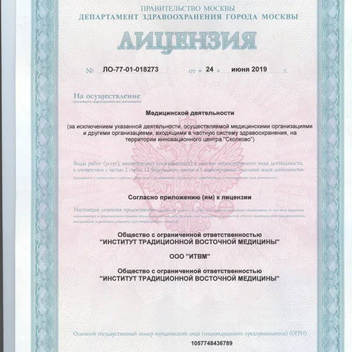
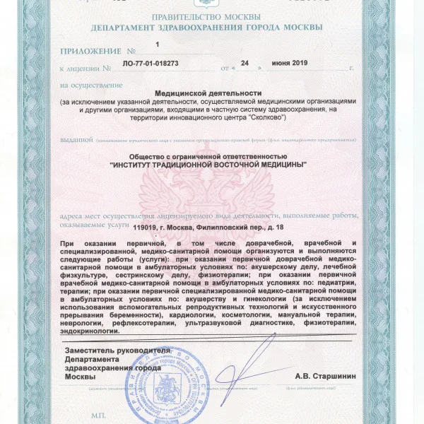
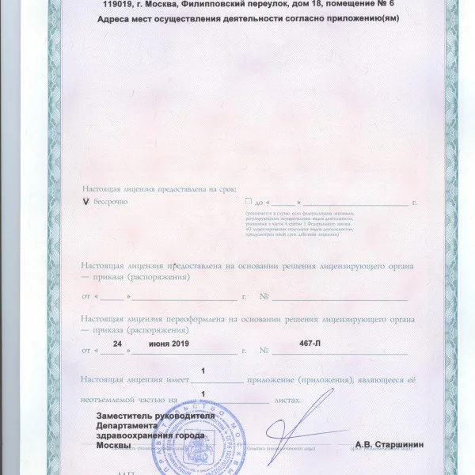

О клинике
Институт Традиционной Восточной Медицины это:
- Одна из первых клиник восточной медицины появившихся в Москве
- Мы являемся клинической базой Института Восточной Медицины "Российского университета дружбы народов" (ИВМ РУДН)
- Расположены в историческом центре Москвы, недалеко от метро Арбатская и Кропоткинская (5 минут пешком)
- Институт оснащен современным медицинским диагностическим оборудованием
- Институт принимает участие во всех значимых Российских форумах по традиционной восточной медицине
- Для пациентов бесплатная автомобильная парковка (24 часа)
- Сотрудничаем с Федеральными медицинскими центрами.
Логотип нашего института отображает взгляд традиционной китайской медицины: «Теория о пяти элементах». Вода, Дерево, Земля, Огонь, Металл участвуют в циклах созидания и разрушения.
В цикле созидания каждый элемент порождает последующий и питает его энергетическим потоком (например, вода питает дерево, дерево дает пищу огню и так далее, все просто и так же сложно, как и в природе). Лечение в нашей клинике отличается тем, что после диагностики для каждого пациента разрабатывается своя схема лечения. Методы лечения зависят от характера заболевания. После проведения диагностики, мы всегда очень внимательно изучаем медицинскую карту больного и на основании проведенных в других клиниках обследований, врач назначает тот или иной лечебный метод. Мы предлагаем как комплексные программы реабилитации — оздоровления, очищения, омоложения организма, так и отдельно иглоукалывание, гирудотерапию, мануальную терапию.
Список заболеваний, которые эффективно лечатся в нашей клинике:
- Заболевания опорно-двигательного аппарата: межпозвоночная грыжа, протрузия межпозвоночного диска, сколиоз, радикулит, артрит, артроз, остеохондроз и др.
- Заболевания желудочно-кишечного тракта: дисбактериоз, запоры, метеоризм, панкреатит, холецистит, язвенная болезнь, гастрит, диарея и др.
- Заболевания нервной системы: мигрени, синдром хронической усталости, неврозы, депрессии, бессонница, паралич лицевого нерва и др.
- Заболевания гинекологии: бесплодие, мастопатия, миома матки, эндометриоз, киста яичника, климактерический синдром (климакс) и др.
- Заболевания дыхательной системы: ОРЗ, хронический бронхит и др.



Материалы института: itvm.ru ↗ · Информация на 26 октября 2026 года.